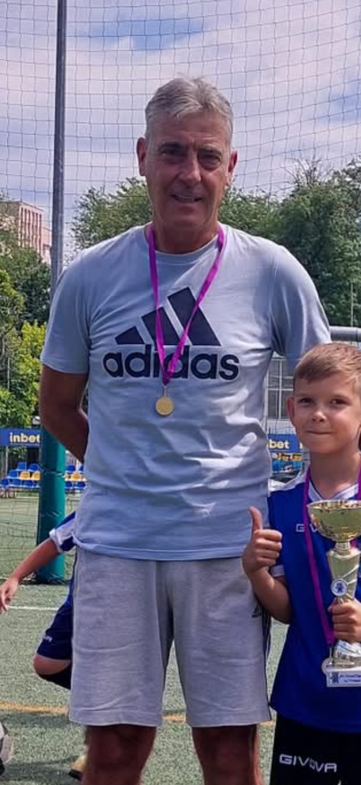
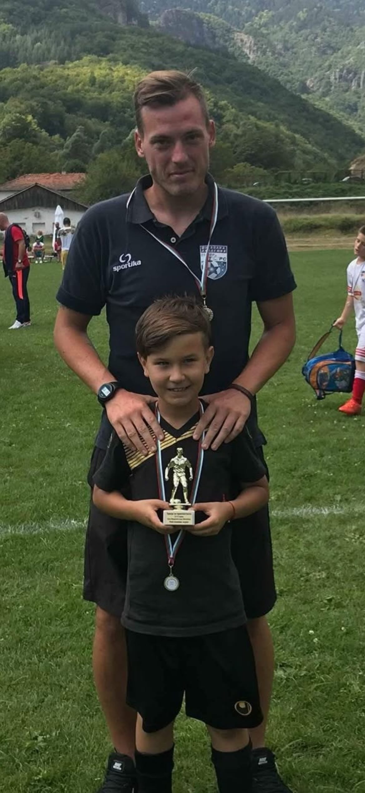

Треньори

Минчо Минчев
Треньор на най-малките футболисти — Футбол 5.
2018 2019 2020 2021

Марио Георгиев
Треньор на групите Футбол 7, Футбол 9 и Футбол 11.
Футбол 7: 2016, 2015 Футбол 9: 2014, 2013, 2012 Футбол 11: 2011, 2010, 2009